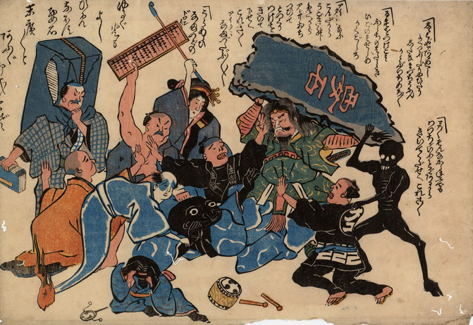

人々から責められる鯰。全身が黒く、青い着物を身につけている。傍らでは子供の鯰が泣いている。
出典：親書誌：U426_nichibunken_0200：〔鯰へのこらしめ；ナマズヘノコラシメ〕／日付：2010／資源識別子：U426_nichibunken_0200_0001_0000
Copyright (c)2010- International Research Center for Japanese Studies, Kyoto, Japan. All rights reserved.